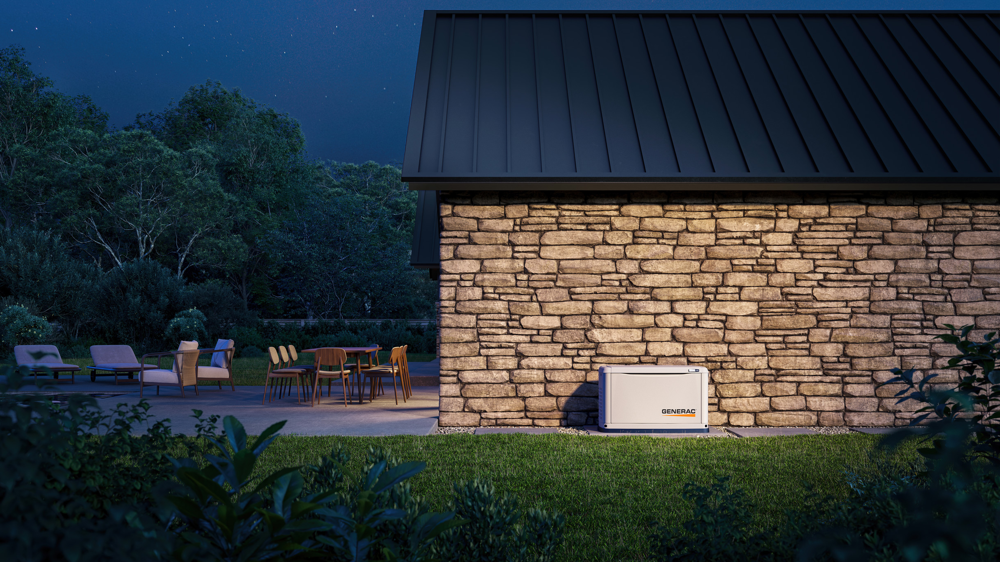
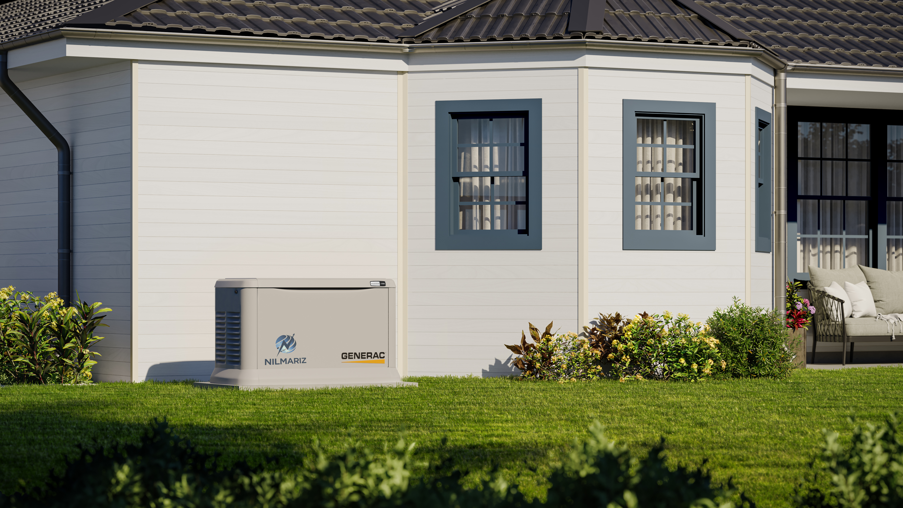
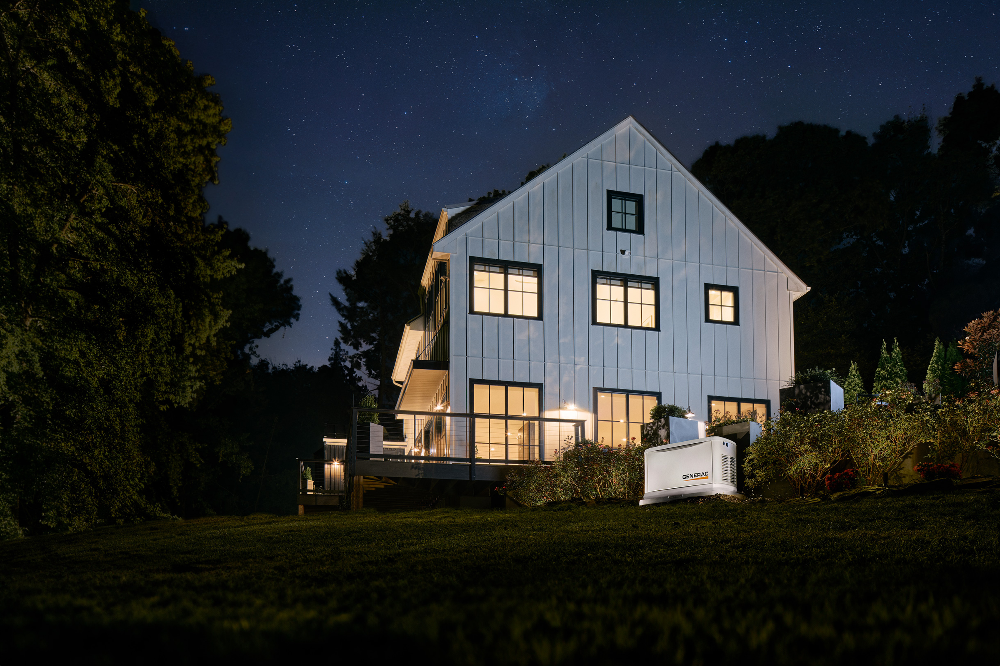
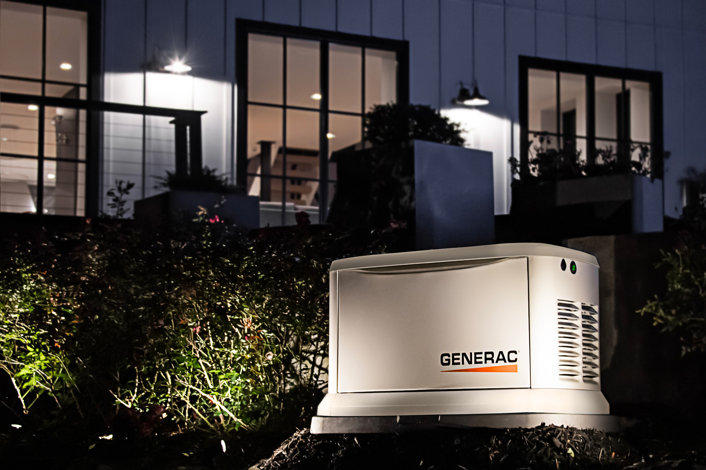

Operação contínua
Conectado à rede de gás natural, o sistema funciona de forma ininterrupta, sem necessidade de reabastecimento.

Geradores a gás natural para operação contínua e sem interrupções. Ideal para residências, comércios e operações industriais.
Conectado à rede de gás natural, o sistema funciona de forma ininterrupta, sem necessidade de reabastecimento.
Menor demanda de manutenção relacionada ao combustível, reduzindo custos operacionais ao longo do tempo.
Funcionamento silencioso, ideal para áreas residenciais, comerciais e ambientes sensíveis.
Equipamentos com fácil instalação e ocupação reduzida, adaptáveis a diferentes tipos de projeto.
Trabalhamos com linhas completas de geradores a gás natural, atendendo desde pequenas aplicações até grandes operações industriais.
As imagens abaixo representam onde os geradores a gás se destacam: conforto, discrição e fornecimento contínuo.

Instalações discretas para casas com demanda constante e conforto contínuo.

Equipamentos integrados ao paisagismo e à arquitetura da propriedade.
Proteção para iluminação, climatização, automação e segurança residencial.

Dimensionamento de acordo com espaço disponível e perfil de consumo do cliente.